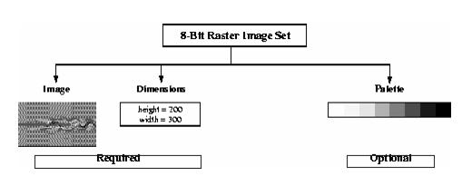
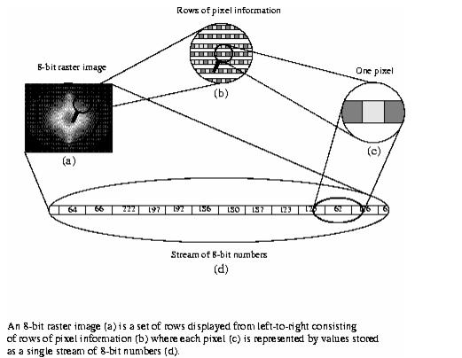

HDF User’s Guide
Version 4.2r4[Top] [Prev][Next]
|
|
HDF User’s GuideVersion 4.2r4 |
[Top] [Prev][Next] |
Chapter 6 -- 8-Bit Raster Images (DFR8 API)
6.1 Chapter Overview
This chapter describes the 8-bit raster image data model and the single-file DFR8 interface routines. The DFR8 interface is a single-file interface that consists of routines for reading and writing raster image sets.
6.2 The 8-Bit Raster Data Model
The data model for the 8-bit raster image set, or RIS8, an acronym for "Raster Image Set, 8-bit", supports three types of objects; two-dimensional 8-bit raster images, dimensions and palettes. The latter two items occur once per RIS8. The following figure shows the contents of an 8-bit raster image set.
FIGURE 6a 8-Bit Raster Image Set Contents6.2.1 Required 8-Bit Raster Image Data Set Objects
Every RIS8 object requires an image and dimension object. Required objects are created by the HDF library using information provided at the time the image is written.
6.2.1.1 8-Bit Raster Image Data Representation
An 8-bit raster image is a two-dimensional array of 8-bit numbers which represent pixels or "picture elements".The first row of pixels corresponds to the top row of the image, the second row of pixels to the second row of the image and so forth. Pixel values range from 0 to 255, and indicate to the hardware which colors to use when mapping the corresponding pixels to the screen display. A color lookup table, or palette, provides the means of correlating pixel values to colors.
As an example, consider a stream of 8-bit numbers representing a raster image. (See Figure 6b.) When the image is displayed, the color associated with the first number in the data stream is placed in the upper left corner of the image. The remainder of the first line is then painted from left-to-right using as many values from the data stream as is necessary to complete the line. The remainder of the rows are similarly painted from left-to-right and top-to-bottom until every value in the data stream appears is represented by one pixel in the image.
FIGURE 6b The Data Representation of an 8-Bit Raster Image6.2.1.2 8-Bit Raster Image Dimension
The dimensions of an image are its height and width in pixels.
6.2.2 Optional 8-Bit Raster Image Data Set Objects
6.2.2.1 Palettes
A palette is a lookup table consisting of 256 unique numerical values, each of which map to the 256 possible pixel color values and is stored in a RIS8 object. For more details on HDF palettes refer to Chapter 9, titled Palettes (DFP API).
6.2.3 Compression Method
The compression method indicates if and how the image is compressed. It can be, at the programmer's option, explicitly set or left as its default setting of no compression. Compression schemes supported by HDF version 4.0 are run-length encoding or RLE, joint photographic expert group compression, or JPEG, and image compression, or IMCOMP . The list of compression methods is presented below. (See Table 6A.) The HDF tags
COMP_RLE,COMP_IMCOMPandCOMP_JPEGare respectively defined as the values 11, 12 and 2 in the "hcomp.h" header file.TABLE 6A 8-Bit Raster Image Compression Method ListRLE Compression
The RLE method is a lossless compression method recommended for images where data retention is critical. The RLE algorithm compresses images by condensing strings of identical pixel values into two bytes. The first byte identifies the number of pixels in the string and the second byte records the pixel value for the string.
The amount of space saved by RLE depends upon how much repetition there is among adjacent pixels. If there is a great deal of repetition, more space is saved and if there is little repetition, the savings can be very small. In the worst case when every pixel is different from the one that precedes it an extra byte is added for every 127 bytes in the image.
JPEG Compression
The JPEG, or Joint Photographic Expert Group, compression method is a lossy compression algorithm whose use is recommended for photographic or scanned images. Using JPEG compression to reduce the size of an image changes the values of the pixels and hence may alter the meaning of the corresponding data. Version 5.0 of the JPEG library is available in HDF version 4.0.
JPEG compression requires two parameters, the first the level of image quality and the second, compatibility. The quality factor determines how much of the data will be lost and thus directly impacts the size of the compressed image. A quality factor of 1 specifies the lowest quality or maximum image compression. A quality factor of 100 specifies the highest quality or minimum image compression. Note that all images compressed using the JPEG algorithm are stored in a lossy manner, even those stored with a quality factor of 100. Usually, it is best to experiment with the quality factor to find the most acceptable one.
The baseline parameter determines whether the contents of the quantization tables used during compression are forced into the range of 0 to 255. The baseline parameter is normally set to the value 1 which forces baseline results. You should set the value of the baseline parameter to values other than 1 only if you are familiar with the JPEG algorithm.
IMCOMP Compression
IMCOMP is a lossy compression method available in earlier versions of HDF. IMCOMP compression is generally of inferior quality to JPEG compression and is not recommended unless your images will be viewed on a 16-color monitor. For backward compatibility, IMCOMP compression is supported in the HDF library. For details on IMCOMP refer to Appendix F, titled Backward Compatibility Issues.
6.3 The 8-Bit Raster Image Interface
The HDF library contains routines for reading and writing 8-bit raster image sets. The functions DFR8addimage, DFR8putimage and DFR8getimage are sufficient for most reading and writing operations.
6.3.1 8-Bit Raster Image Library Routines
The names of all C functions in the 8-bit raster image interface are prefaced by "DFR8" and the names of the equivalent FORTRAN-77 functions are prefaced by "d8". These routines are divided into the following categories:
The DFR8 function calls are further defined in Table 6B and in the HDF Reference Guide.
TABLE 6B DFR8 Library Routines6.4 Writing 8-Bit Raster Images
The DFR8 programming model for writing an 8-bit raster image sets is as follows:
The two optional steps can be invoked in any order, as long as they are executed before Step 3. By default, images are stored uncompressed with no associated palette.
6.4.1 Storing a Raster Image: DFR8putimage and DFR8addimage
To write a raster image to an HDF file, the calling program must contain the following:
OR
DFR8putimage and DFR8addimage write an 8-bit raster image to an HDF file named by the filename parameter. When given a new filename, DFR8putimage and DFR8addimage create a new file and write the raster image as the first raster image in the file. When given an existing filename, DFR8putimage overwrites the file whereas DFR8addimage appends data to the end of the file.
In the DFR8putimage and DFR8addimage functions, the raster data is passed in the image parameter and the width and height of the image are passed in the width and height parameters. The compression algorithm used to store the image is passed in the compress parameter. Valid compress values include
COMP_NONE,COMP_RLE,COMP_JPEGandCOMP_IMCOMP.COMP_NONErepresents no compression (storage only),COMP_RLErepresents run-length encoding,COMP_JPEGrepresents JPEG compression andCOMP_IMCOMPrepresents IMCOMP encoding.Parameters for DFR8putimage and DFR8addimage are further described below. Table 6C on page 243
TABLE 6C DFR8putimage and DFR8addimage Parameter ListEXAMPLE 1. Writing an 8-Bit Raster Image to an HDF FileIn the following code examples, DFR8addimage and d8aimg are used to write an 8-bit image to a file named "Example1.hdf". Note that the order in which the dimensions for the image array are declared differs between C and FORTRAN-77.
C:#include "hdf.h" #define WIDTH 5 #define HEIGHT 6 main( ) { /* Initialize the image array */ static uint8 raster_data[HEIGHT][WIDTH] = { 1, 2, 3, 4, 5, 6, 7, 8, 9, 10, 11, 12, 13, 14, 15, 16, 17, 18, 19, 20, 21, 22, 23, 24, 25, 26, 27, 28, 29, 30 }; intn status; /* Write the 8-bit raster image to file */ status = DFR8addimage("Example1.hdf", raster_data, WIDTH, HEIGHT, 0); }FORTRAN:PROGRAM RASTER8 character*1 raster_data(5,6) integer retn, d8aimg integer*4 WIDTH, HEIGHT parameter(WIDTH = 5, HEIGHT = 6) C Initialize the image array data raster_data / 1, 2, 3, 4, 5, $ 6, 7, 8, 9, 10, $ 11, 12, 13, 14, 15, $ 16, 17, 18, 19, 20, $ 21, 22, 23, 24, 25, $ 26, 27, 28, 29, 30 / C Write the 8-bit raster image to the file retn = d8aimg('Example1.hdf', raster_data, WIDTH, HEIGHT, 0) end6.4.2 Adding a Palette to an RIS8 Object: DFR8setpalette
DFR8setpalette identifies the palette to be used for the subsequent write operations. It may be used to assign a palette to a single image or several images. After a palette has been set, it acts as the current palette until it is replaced by another call to DFR8setpalette. To create a raster image set containing a palette, the calling program must contain the following:
DFR8setpalette takes palette as its only parameter. To set the default palette to "no palette", pass
NULLas the palette parameter. DFR8setpalette is further defined in the following table.TABLE 6D DFR8setpalette Parameter List
These examples demonstrate how a palette stored in the array colors and the raw image stored in the 20 x 20 array picture is written to a RIS8 object. The image is not compressed and, in these examples, uninitialized. The raster image set is stored as the first image in "Example2.hdf". Note that because DFR8putimage recreates the file, anything previously contained in this file will be erased.
C:#include "hdf.h" #define WIDTH 20 #define HEIGHT 20 main( ) { uint8 colors[256*3], picture[HEIGHT][WIDTH]; uint8 i, j; int16 status; /* Initialize image arrays. */ for (j = 0; j < WIDTH; j++) { for (i = 0; i < HEIGHT; i++) picture[j][i] = 1; } /* Set the current palette. */ status = DFR8setpalette(colors); /* Write the image data to the file. */ status = DFR8putimage("Example2.hdf", picture, WIDTH, HEIGHT, COMP_NONE); }FORTRAN:PROGRAM WRITE UNCOMPRESSED RIS8 integer d8spal, d8pimg, status, i, j integer colors(768) integer*4 WIDTH, HEIGHT, COMP_NONE parameter (COMP_NONE = 0, + WIDTH = 20, + HEIGHT = 20) integer picture(WIDTH, HEIGHT) C Initialize the image data. do 20 j = 1, WIDTH do 10 i = 1, HEIGHT picture(j, i) = 1 10 continue 20 continue C Set the current palette. status = d8spal(colors) C Write the image data to the file. status = d8pimg('Example2.hdf', picture, WIDTH, HEIGHT, + COMP_NONE) end6.4.3 Compressing 8-Bit Raster Image Data: DFR8setcompress
The compression type is determined by the tag passed as the fifth argument in calls to the DFR8putimage and DFR8addimage routines. DFR8setcompress is currently required only to reset the default JPEG compression options. However, future versions of this routine will support additional compression schemes.
To set non-default compression parameters, the calling program should contain the following sequence of routines:
Notice that the calling sequence for C differs from the calling sequence for FORTRAN-77. Once the compression is set, the parameter type in the DFR8setcompress routine, or d8scomp in FORTRAN-77, specifies the compression method that will be used when storing the raster images. However, the c_info parameter, which is a pointer to a structure that contains information specific to the compression scheme indicated by the type parameter in DFR8setcompress, is missing from d8scomp. Because data structures of variable size are not supported in FORTRAN-77, another routine specific to the compression library is required in the FORTRAN-77 calling sequence.
The c_info union is described in Chapter 3, titled Scientific Data Sets (SD API). The values contained in this union are passed into the d8sjpeg FORTRAN-77-specific routine.
Parameters for DFR8setcompress and d8sjpeg are further described in Table 6E below.
TABLE 6E DFR8setcompress Parameter ListEXAMPLE 3. Writing a Set of Compressed 8-Bit Raster ImagesThese examples contain a series of calls in which four 20 x 20 images are written to the same file. The first two use palette paletteA and are compressed using the RLE method; the third and fourth use palette paletteB and are not compressed.
C:#include "hdf.h" #define WIDTH 20 #define HEIGHT 20 main ( ) { uint8 paletteA[256*3], paletteB[256*3]; uint8 picture1[HEIGHT][WIDTH], picture2[HEIGHT][WIDTH]; uint8 picture3[HEIGHT][WIDTH], picture4[HEIGHT][WIDTH]; uint8 i, j; int16 status; /* Initialize image arrays. */ for (j = 0; j < WIDTH; j++) { for (i = 0; i < HEIGHT; i++) { picture1[j][i] = 1; picture2[j][i] = 1; picture3[j][i] = 1; picture4[j][i] = 1; } } /* Set the first palette. */ status = DFR8setpalette(paletteA); /* Write the compressed image data to the HDF file. */ status = DFR8putimage("Example3.hdf", (VOIDP)picture1, WIDTH, HEIGHT, \ COMP_RLE); status = DFR8addimage("Example3.hdf", (VOIDP)picture2, WIDTH, HEIGHT, \ COMP_RLE); /* Set the second palette. */ status = DFR8setpalette(paletteB); /* Write the uncompressed image data to the HDF file. */ status = DFR8addimage("Example3.hdf", (VOIDP)picture3, WIDTH, HEIGHT, \ COMP_NONE); status = DFR8addimage("Example3.hdf", (VOIDP)picture4, WIDTH, HEIGHT, \ COMP_NONE); }FORTRAN:PROGRAM WRITE IMAGE SETS integer d8spal, d8pimg, d8aimg, status integer*4 COMP_RLE, COMP_NONE, WIDTH, HEIGHT parameter (COMP_RLE = 11, + COMP_NONE = 0, + WIDTH = 20, + HEIGHT = 20) integer paletteA(768), paletteB(768) integer picture1(WIDTH, HEIGHT), picture2(WIDTH, HEIGHT) integer picture3(WIDTH, HEIGHT), picture4(WIDTH, HEIGHT) C Initialize the image data. do 20 j = 1, WIDTH do 10 i = 1, HEIGHT picture1(j, i) = 1 picture2(j, i) = 1 picture3(j, i) = 1 picture4(j, i) = 1 10 continue 20 continue C Set the first palette. status = d8spal(paletteA) C Write the compressed image data to the HDF file. status = d8pimg('Example3.hdf', picture1, WIDTH, HEIGHT, + COMP_RLE) status = d8aimg('Example3.hdf', picture2, WIDTH, HEIGHT, + COMP_RLE) C Set the second palette. status = d8spal(paletteB) C Write the uncompressed image data to the HDF file. status = d8aimg('Example3.hdf', picture3, WIDTH, HEIGHT, + COMP_NONE) status = d8aimg('Example3.hdf', picture4, WIDTH, HEIGHT, + COMP_NONE) endEXAMPLE 4. Compressing and Writing a 8-Bit Raster ImageIn the following examples, DFR8addimage and DFR8compress are used to compress an 8-bit image and write it to an HDF file named "Example2.hdf". Notice that compressing an image in C requires only one function call, whereas compressing an image using FORTRAN-77 requires two. The second FORTRAN-77 call is required because it is not valid to pass a structure as a parameter in FORTRAN-77.
C:#include "hdf.h" #include "hcomp.h" #define WIDTH 3 #define HEIGHT 5 #define PIXEL_DEPTH 3 main( ) { /* Initialize the image array. */ static uint8 raster_data[HEIGHT][WIDTH][PIXEL_DEPTH] = { 1, 2, 3, 4, 5, 6, 7, 8, 9, 10,11,12, 13,14,15, 16,17,18, 19,20,21, 22,23,24, 25,26,27, 28,29,30, 31,32,33, 34,35,36, 37,38,39, 40,41,42, 43,44,45 }; static comp_info compress_info; intn status; /* Initialize JPEG compression structure. */ compress_info.jpeg.quality = 60; compress_info.jpeg.force_baseline = 1; /* Set JPEG compression for storing the image. */ status = DFR8setcompress(COMP_JPEG, &compress_info); /* Write the 8-bit image data to file. */ status = DFR8addimage("Example2.hdf", (VOIDP)raster_data, WIDTH, HEIGHT, COMP_JPEG); }FORTRAN:PROGRAM COMPRESS RIS8 integer d8aimg, d8scomp, d8sjpeg, status integer*4 WIDTH, HEIGHT, PIXEL_DEPTH, COMP_JPEG C COMP_JPEG is defined in hcomp.h. parameter(WIDTH = 3, + HEIGHT = 5, + COMP_JPEG = 1, + PIXEL_DEPTH = 3) character raster_data(PIXEL_DEPTH, WIDTH, HEIGHT) C Initialize the image array. data raster_data + / 1, 2, 3, 4, 5, 6, 7, 8, 9, + 10,11,12, 13,14,15, 16,17,18, + 19,20,21, 22,23,24, 25,26,27, + 28,29,30, 31,32,33, 34,35,36, + 37,38,39, 40,41,42, 43,44,45 / C Set compression. status = d8scomp(COMP_JPEG) C Set JPEG parameters to quality = 60, and turn compatibility on. status = d8sjpeg(60, 1) C Write the 8-bit image data to the HDF file. status = d8aimg('Example2.hdf', raster_data, WIDTH, HEIGHT, + COMP_JPEG) end6.4.4 Specifying the Reference Number of an RIS8: DFR8writeref
DFR8writeref specifies the reference number of the image to be written when DFR8addimage or DFR8putimage is called. Use the following calling sequence to invoke DFR8writeref:
DFR8writeref assigns the reference number passed in the ref parameter to the next image the file specified by the filename parameter. If the value of ref is the same as the reference number of an existing RIS8, the existing raster image data will be overwritten. The parameters for DFR8writeref are further described below. (See Table 6F.)
It is unlikely that you will need this routine, but if you do, use it with caution. It is not safe to assume that a reference number indicates the file position of the corresponding image as there is no guarantee that reference numbers appear in sequence in an HDF file.
TABLE 6F DFR8writeref Parameter List6.5 Reading 8-Bit Raster Images
The DFR8 programming model for reading an 8-bit raster image set is as follows:
6.5.1 Reading a Raster Image: DFR8getimage
If dimensions of the image are known, DFR8getimage is the only function call needed to read a raster image. If a file is being opened for the first time, DFR8getimage returns the first image in the file. Additional calls will return successive images in the file, therefore images are read in the order which they were written to the file. DFR8getdims is called before DFR8getimage so that space allocations for the image and palette can be checked and the dimensions verified. If this information is already known, DFR8getdims may be omitted.
To read a raster image from an HDF file, the calling program must contain the following:
DFR8getimage retrieves the next 8-bit image from the HDF file name specified by the filename parameter. If the image in the file is compressed, DFR8getimage first decompresses it then places it in memory at the location pointed to by the image parameter. The dimensions of the array allocated to hold the image are specified by the width and height parameters and may be larger than the actual image.The palette, if present, is stored in memory at the location pointed to by the palette parameter. If it contains a
NULLvalue the palette is not loaded, even if there is one stored with the image. The parameters for DFR8getimage are defined further in Table 6G below.Notice that in Example 4, as in the case of DFR8addimage, the order in which the dimensions for the image array are declared differs between C and FORTRAN-77. FORTRAN-77 declarations require the width before the height while the C declaration requires the height before the width as FORTRAN-77 arrays are stored in column-major order, while C arrays are stored in row-major order. (row-major order implies that the second coordinate varies fastest). When d8gimg reads an image from a file, it assumes column-major order.
6.5.2 Querying the Dimensions of an 8-Bit Raster Image: DFR8getdims
DFR8getdims opens a named file, finds the next image or the first image if the file is being opened for the first time, retrieves the dimensions of the image and determines if there is a palette associated with the image. If the file is being opened for the first time, DFR8getdims returns information about the first image in the file. If an image has already been read, DFR8getdims finds the next image. In this way, images are read in the same order in which they were written to the file.
To determine the dimensions of an image before attempting to read it, the calling program must include the following routines:
DFR8getdims retrieves dimension and palette information about the next 8-bit image in the file specified by filename. The returned information is pointed to by the width and height parameters. The haspalette parameter determines the presence of a palette and returns a value of 1 if it exists and 0 otherwise. The parameters for DFR8getdims are defined further in the following table.
TABLE 6G DFR8getdims and DFR8getimage Parameter ListEXAMPLE 5. Reading an 8-Bit Raster ImageThe following examples search the "Example1.hdf" file created in Example 1 for the dimensions of an 8-bit image. Although the DFR8getdims call is optional, it is included as a demonstration of how to check the dimensions of an image. This example also assumes that the data set does not include a palette, therefore
NULLis passed as the palette parameter. If the palette argument isNULL(or "0" in FORTRAN-77), all palette data is ignored.C:#include "hdf.h" #define WIDTH 5 #define HEIGHT 6 main( ) { uint8 raster_data[HEIGHT][WIDTH]; int32 width, height; intn haspal, status; /* Get the dimensions of the image */ status = DFR8getdims("Example1.hdf", &width, &height, &haspal); /* Read the raster data if the dimensions are correct */ if (width <= WIDTH && height <= HEIGHT) status = DFR8getimage("Example1.hdf", (VOIDP)raster_data, width, height, NULL); }FORTRAN:PROGRAM RASTER8 character*1 image(5, 6) integer status, height, width, d8gimg, d8gdims, haspal integer*4 width, height C Get the dimensions of the image. status = d8gdims('Example1.hdf', width, height, haspal) C Read the raster data if the dimensions are correct. if (width .le. 5 .and. height .le. 6) then status = d8gimg('Example1.hdf', image, width, height, 0) endif end6.5.3 Reading an Image with a Given Reference Number: DFR8readref
DFR8readref accesses specific images that are stored in files containing multiple raster image sets. It is an optionally used before DFR8getimage to set the access pointer to the specified raster image. DFR8readref can be used in connection with vgroups, which identify their members by tag/reference number pairs. See Chapter 5, titled Vgroups (V API), for a discussion of vgroups and tag/reference number pairs.
To access a specific raster image set, use the following calling sequence:
DFR8readref specifies that the target for the next read operation performed on the HDF file specified by the filename parameter is the object with the reference number named in the ref parameter. The parameters required for DFR8readref are defined further in the following table.
TABLE 6H DFR8readref Parameter List6.5.4 Specifying the Next 8-Bit Raster Image to be Read: DFR8restart
DFR8restart causes the next call to DFR8getimage or DFR8getdims to read the first raster image set in the file. Use the following call to invoke DFR8restart:
6.6 8-Bit Raster Image Information Retrieval Routines
6.6.1 Querying the Total Number of 8-Bit Raster Images: DFR8nimages
DFR8nimages returns the total number of 8-bit raster image sets in a file and has the following syntax:
TABLE 6I DFR8nimages Parameter List
6.6.2 Determining the Reference Number of the Most-Recently-Accessed
8-Bit Raster Image: DFR8lastrefDFR8lastref returns the reference number most recently used in writing or reading an 8-bit raster image. This routine is primarily used for attaching annotations to images and adding images to vgroups. (See Chapters 8, titled Annotations (DFAN API) and Chapter 5, titled Vgroups (V API) for more detailed information on how to use reference numbers in connection with these applications.)
The following calling sequence uses DFR8lastref to find the reference number of the 8-bit raster image most recently added to an HDF file:
DFR8putimage or DFR8getimage can be used instead of DFR8addimage with similar results.
6.6.3 Determining the Reference Number of the Palette of the
Most-Recently-Accessed 8-Bit Raster Image: DFR8getpalrefDFR8getpalref returns the reference number of the palette associated with the most recently used in writing or reading an 8-bit raster image. The DFR8getdims routine must be called before DFR8getpalref, as DFR8getdims initializes internal structures required by DFR8getpalref.
There is currently no FORTRAN-77 version of the DFR8getpalref routine.
TABLE 6J DFR8nimages Parameter List
6.7 RIS8 Backward Compatibility Issues
6.7.1 Attribute "long_name" Included in HDF for netCDF Compatibility
In several routines of the RIS8 interface, the value returned by label is the value of the attribute named "long_name" and that the value returned by coordsys is the value of the attribute named "cordsys".
This was done in order to provide HDF with the ability to read netCDF files. While this aspect of HDF functionality will not affect its ability to read HDF data files written by programs compiled with earlier versions of HDF, it is advisable for HDF users to know this to be aware of the significance of the "long_name" and "cordsys" attribute names in a list of attributes.
6.7.2 Raster Image Group Implementation with New RIS8 Tags
As HDF has evolved, a variety of structures have been used to store raster image sets. For instance, HDF first began grouping 8-bit raster images together with dimensions and palettes by insuring that their reference numbers fell in a certain pattern. This method of organizing raster images quickly lead to very complicated collections of images, dimension records, and palettes, and eventually was replaced by an specific grouping structure known as a Raster Image Group, or RIG, with a completely new set of tags.
To maintain backward compatibility with older versions of HDF, the RIS8 interface supported by HDF version 4.1 and later recognizes raster images stored using either set of HDF tags. Details on the different tags and structures used to store raster images can be found in the HDF Specifications and Developer's Guide v3.2 from the HDF web site at http://www.hdfgroup.org/.
|
HDF4.2r4 - February 2009 Copyright |
The HDF Group www.hdfgroup.org |